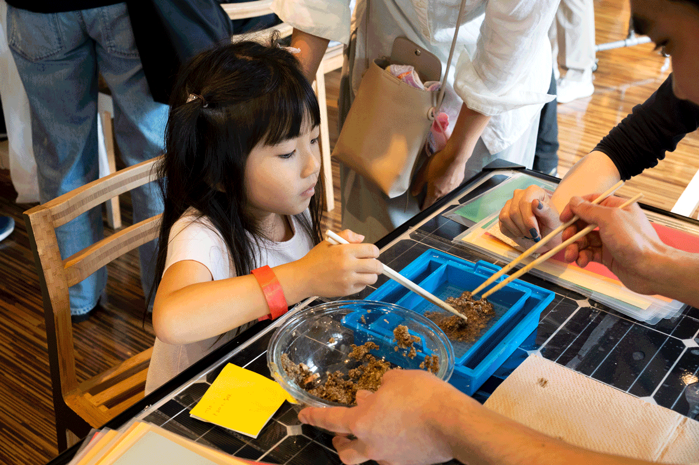
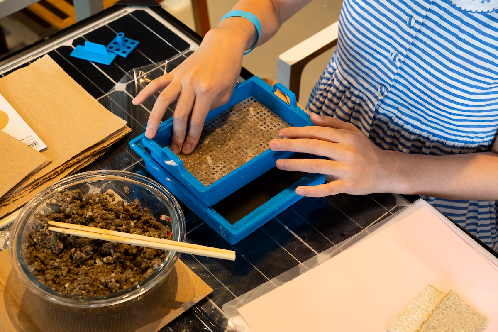
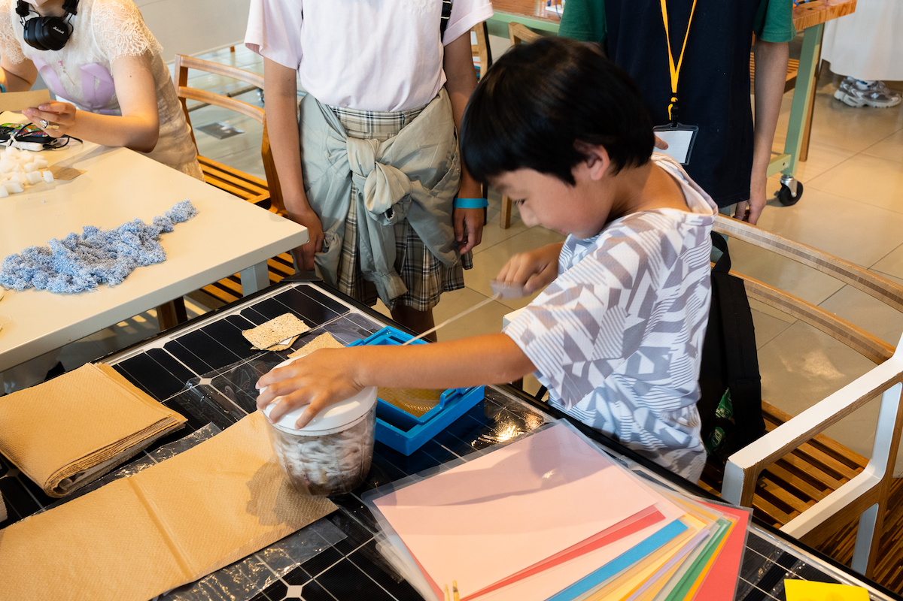
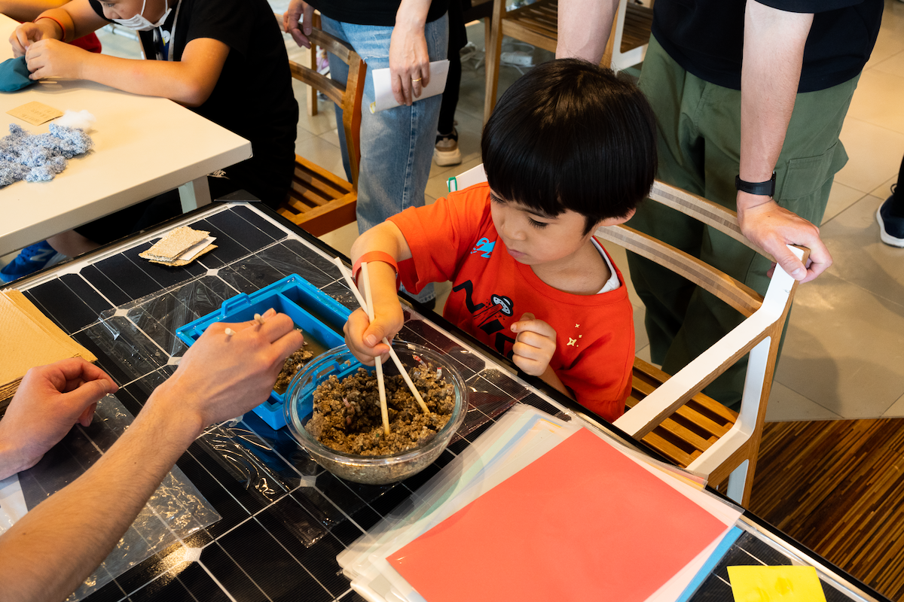
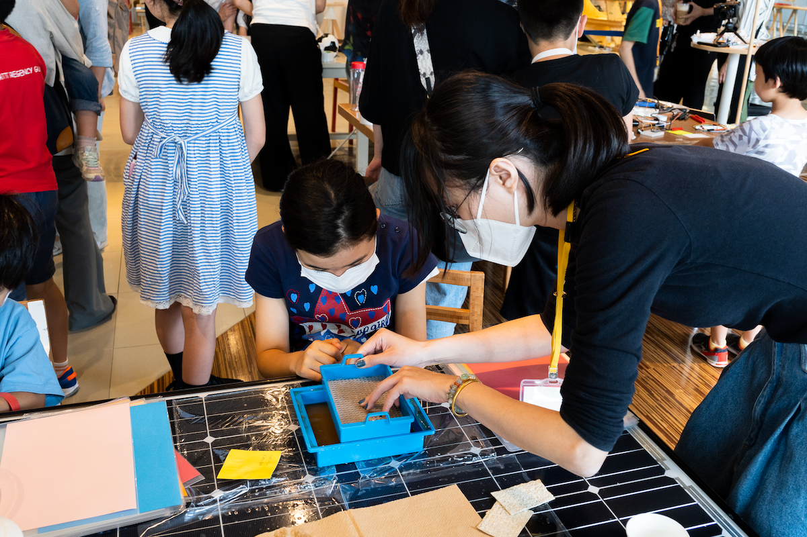
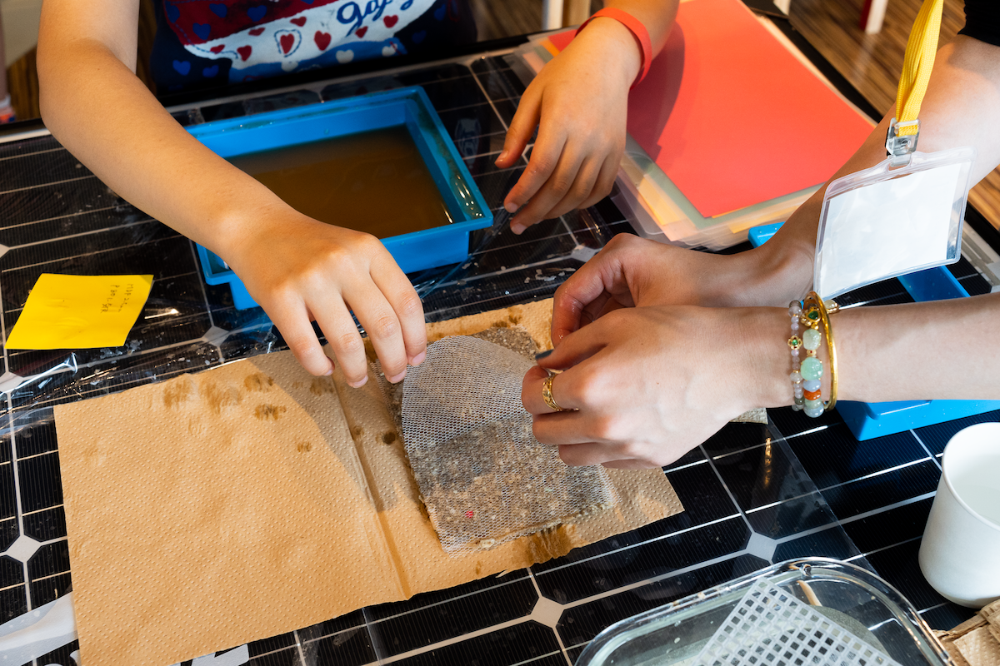
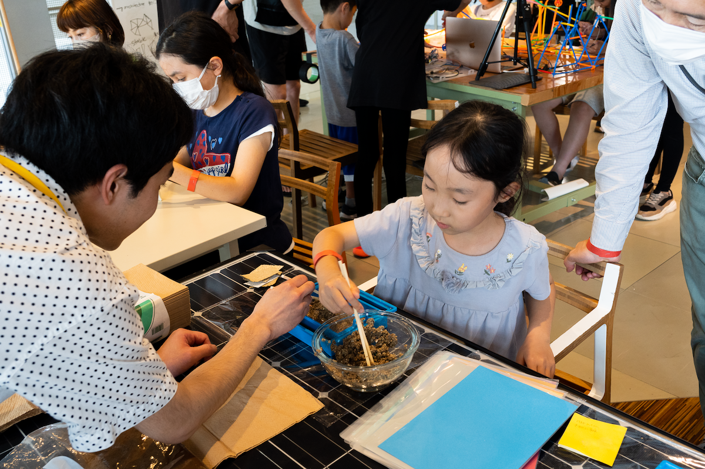
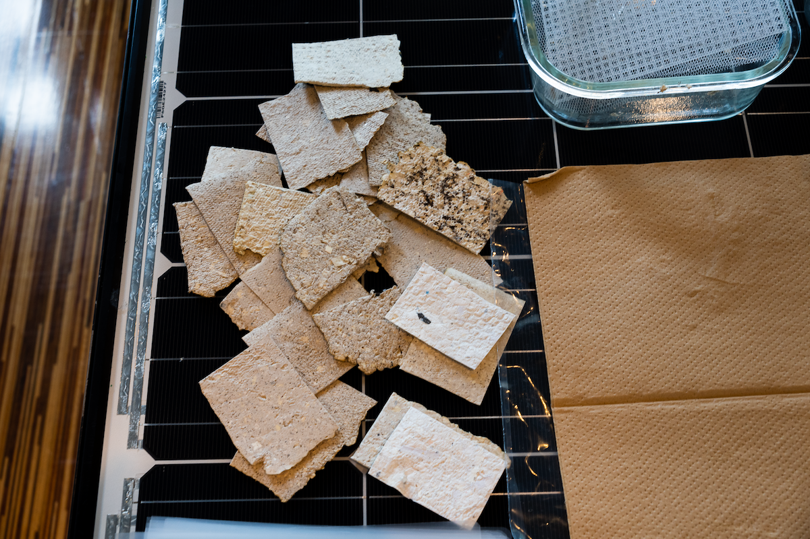

A 1-day workshop exploring how to make DIY craft with upcycled waste more appealing to children, hosted at AkeruE — Panasonic's Creative Museum — with the Future Crafts Project. Participants learned to transform coffee grounds into handmade paper.

Hosted at AkeruE — Panasonic's Creative Museum in Tokyo — this workshop taught participants to upcycle coffee grounds into handmade paper. The exercise was as much about observation as making: we wanted to understand what made children engage with or disengage from upcycling activities.
When children were presented with pre-prepared mixtures, they showed hesitation and disengagement. But when given raw materials and invited into the full DIY process — from raw waste to finished object — they became intrigued and enthusiastic.






The AkeruE workshop established a core principle that ran through subsequent waste research: upcycling interventions must offer the full experience of transformation — raw material to finished object — rather than a shortcut to the end state.
This finding directly shaped the design brief for PlastiCraft, which placed the act of handling and transforming raw plastic waste at the center of the experience.
